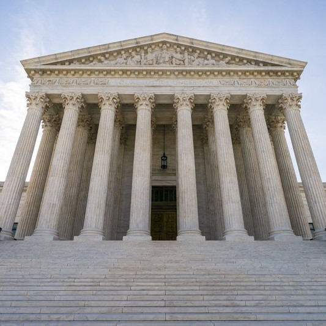

The Issues
Every person has a particular perspective with which they view a problem and try to solve it. In the same way, the candidates that you are going to vote for do too. Before looking at this page, you might want to look at the candidates, both your and the candidates’ position on the political grid, so you know the way you would look at these issues. Here, we are listing important issues and articles about them from sources with different biases in order to help you realize how one issue can be seen from multiple lenses. In the end, we also include a chart with different news sources placed on a media bias chart so that you always think of the bias involved in an article and not automatically thinking of it as neutral.
Alabama Abortion Ban
Left |
Center |
Right |
|  | ||
Even far-right televangelist Pat Robertson thinks Alabama’s abortion law ‘has gone too far’ |
Justices won’t revive Alabama ban on abortion procedure |
Abortion Bans: Let’s Have the Fight |
LGBTQ+ Adoption Rights
Left |
Center |
Right |
Same-Sex Parents Still Face Legal Complications |
Trump Sued Over Plan to Let Adoption Agencies Reject Gay Couples |
Michigan adoption agency reverses LGBT policy |
Immigration Detention Center